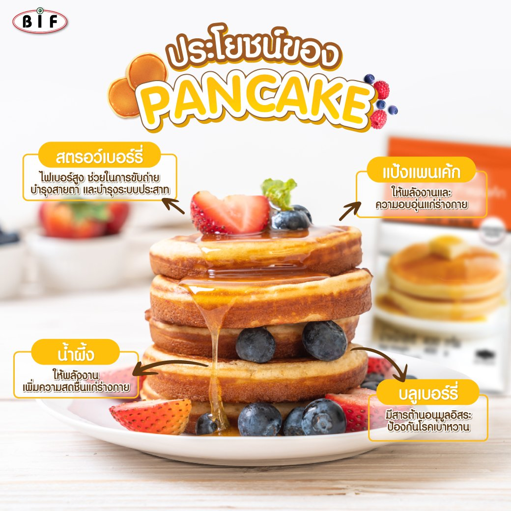

|
.png) |
สายเค้ก สายเบเกอรี่ ต้องมาดู! เพราะเราจะพาทุกคนไปทำความรู้จัก หลายๆคนอาจคิดว่าของหวานสุดอร่อยที่เต็มไปด้วยน้ำตาลนี้ หากกินมากๆอาจจะไม่ดีต่อร่างกาย เพราะปริมาณน้ำตาลที่มากเกินไป อาจทำให้อ้วนและฟันผุได้ แต่รู้หรือไม่ว่าการกินเค้กช็อกโกแลตเป็นอาหารเช้านั้นช่วยส่งเสริมการทำงานของสมองและร่างกายา
